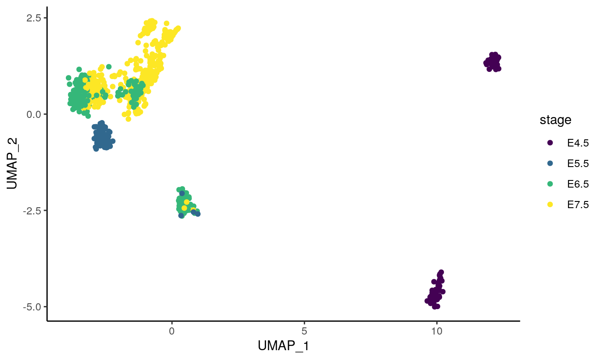
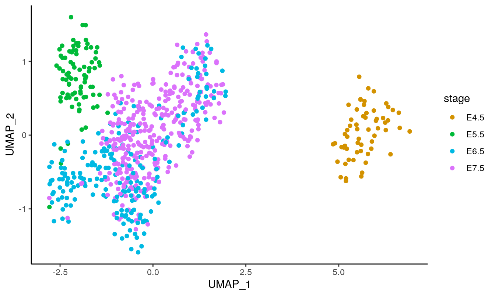
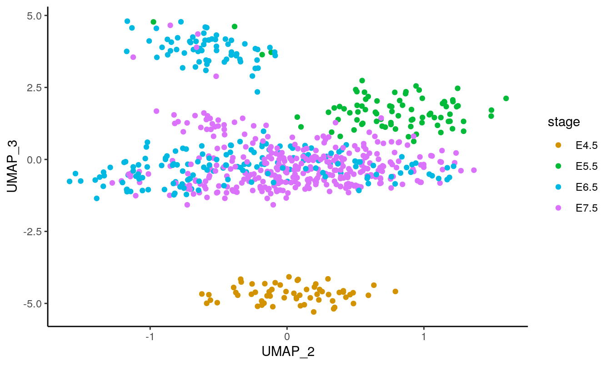
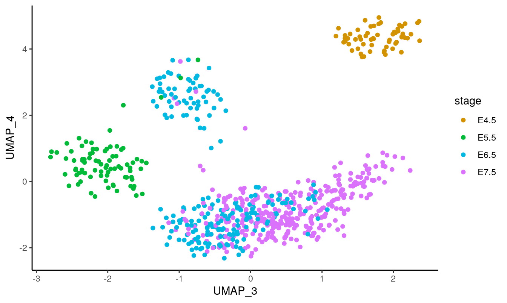

scNMTseq challenge analysis using a PLS-based approach
Al JalalAbadi1
11 Jul 2020
Source:vignettes/index.Rmd
index.RmdTo Do
- Add the number of features to subtitles in
cov_plot - Ensure python3 can be configured for MOFA2
Note: These analyses are (slightly) different from the ones presented in the hackathon in the sense that:
- The cells used are different (only embryonic cells used)
- To enhance reproducibility on different machines,
uwot::umapwas used instead ofumap::umapfor dimensionality reduction of RNA data so that python depndencies are reduced
Load the required packages:
library(BIRSBIO2020.scNMTseq.PLS) library(SingleCellMultiModal) library(MultiAssayExperiment) library(ggplot2) library(knitr) library(kableExtra) library(data.table) library(uwot) library(reticulate)
## you might need to set up your own python3 using reticulate::use_python py.res <- tryCatch({use_python('usr/bin/python3', required = TRUE)}, error = function(e) e) message('Python used: ', paste0(system('which python', intern = TRUE))) #> Python used: /usr/bin/python message(paste0(py.res,'\n', paste(reticulate::py_config(), collapse = '\n'))) #> Error in use_python("usr/bin/python3", required = TRUE): Specified version of python 'usr/bin/python3' does not exist. #> #> /usr/bin/python #> /usr/lib/python2.7/config-x86_64-linux-gnu/libpython2.7.so #> //usr://usr #> #> #> 2.7.17 (default, Apr 15 2020, 17:20:14) [GCC 7.5.0] #> 2.7 #> 64bit #> FALSE #> list(path = "/usr/local/lib/python2.7/dist-packages/numpy", version = list(c(1, 16, 6))) #> NULL #> NULL #> TRUE #> c("/usr/bin/python3", "/usr/bin/python") #> NULL
Data
Load RNA and methylation data from SingleCellMultiModal package:
gastru.mae <- scNMT("mouse_gastrulation", mode = c('rna', 'met*'), dry.run = FALSE) gastru.mae #> A MultiAssayExperiment object of 7 listed #> experiments with user-defined names and respective classes. #> Containing an ExperimentList class object of length 7: #> [1] met_cgi: matrix with 5536 rows and 826 columns #> [2] met_CTCF: matrix with 175 rows and 826 columns #> [3] met_DHS: matrix with 66 rows and 826 columns #> [4] met_genebody: matrix with 15837 rows and 826 columns #> [5] met_p300: matrix with 101 rows and 826 columns #> [6] met_promoter: matrix with 12092 rows and 826 columns #> [7] rna: matrix with 18345 rows and 826 columns #> Functionality: #> experiments() - obtain the ExperimentList instance #> colData() - the primary/phenotype DataFrame #> sampleMap() - the sample coordination DataFrame #> `$`, `[`, `[[` - extract colData columns, subset, or experiment #> *Format() - convert into a long or wide DataFrame #> assays() - convert ExperimentList to a SimpleList of matrices #> exportClass() - save all data to files
filter extra-embryonic cells
table(gastru.mae$lineage10x_2) #> #> Ectoderm Endoderm Epiblast ExE_ectoderm #> 43 81 334 8 #> Mesoderm Primitive_endoderm Primitive_Streak Visceral_endoderm #> 169 43 76 69
drop_lineages <- c('ExE_ectoderm', 'Primitive_endoderm', 'Visceral_endoderm') drop_cells <- (gastru.mae$lineage10x_2 %in% drop_lineages) | is.na(gastru.mae$lineage10x_2) gastru.mae <- gastru.mae[, !drop_cells,]
gastru.mae #> A MultiAssayExperiment object of 7 listed #> experiments with user-defined names and respective classes. #> Containing an ExperimentList class object of length 7: #> [1] met_cgi: matrix with 5536 rows and 703 columns #> [2] met_CTCF: matrix with 175 rows and 703 columns #> [3] met_DHS: matrix with 66 rows and 703 columns #> [4] met_genebody: matrix with 15837 rows and 703 columns #> [5] met_p300: matrix with 101 rows and 703 columns #> [6] met_promoter: matrix with 12092 rows and 703 columns #> [7] rna: matrix with 18345 rows and 703 columns #> Functionality: #> experiments() - obtain the ExperimentList instance #> colData() - the primary/phenotype DataFrame #> sampleMap() - the sample coordination DataFrame #> `$`, `[`, `[[` - extract colData columns, subset, or experiment #> *Format() - convert into a long or wide DataFrame #> assays() - convert ExperimentList to a SimpleList of matrices #> exportClass() - save all data to files
Check column names are consistent:
all_identical(colnames(gastru.mae)) #> [1] TRUE
coldata <- data.frame(colData(gastru.mae))
Breakdown of the number of cells in each stage and putative lineage:
table(coldata$lineage10x_2, coldata$stage) %>% kable %>% kable_styling(bootstrap_options = c("striped"), font_size = 16)
| E4.5 | E5.5 | E6.5 | E7.5 | |
|---|---|---|---|---|
| Ectoderm | 0 | 0 | 0 | 43 |
| Endoderm | 0 | 0 | 0 | 81 |
| Epiblast | 60 | 84 | 146 | 44 |
| Mesoderm | 0 | 0 | 28 | 141 |
| Primitive_Streak | 0 | 0 | 43 | 33 |
Feature detection
Create density plots of the feature detection rate across all cells for all modalities:
# get the methylation assays met_assays <- grep(names(gastru.mae), pattern = '^met', value = TRUE) # calculate the feature detection in a data.frame for methylation assays coverages <- lapply(named_list(met_assays), function(assay_name) { mat <- assay(gastru.mae, assay_name) NAs <- rowSums(!is.na(mat))/dim(mat)[2]*100 data.frame(pct_NAs=NAs) }) # create a long data.frame containing the assay name for plot coverages <- rbindListWithNames(coverages) coverages$dataset <- factor(coverages$dataset, levels = unique(coverages$dataset), ordered = TRUE)
cov_plot <- ggplot(coverages, aes(x = pct_NAs)) + geom_density(fill = 'lightblue', show.legend = FALSE) + geom_vline(aes(xintercept=mean(pct_NAs)), color="blue", linetype="dashed", size=0.5) + labs(x = '% of cells detecting the feature') + facet_wrap(.~dataset, nrow = 2) + theme_bw() + theme(strip.text.x = element_text(size = 10, face = 'bold')) cov_plot

density plots for methylation data show that shorter genomic regions tend to have less feture coverage. Dashed blue line indicates the average across all modalities.
RNA
rna <- assay(gastru.mae, 'rna')
UMAP
ncomp <- 5 set.seed(42) ## all params use defaults except for 'n_components' and 'min_dist' umap_rna_unsup <- uwot::umap( t(rna), n_neighbors = 15, n_components = ncomp, metric = "euclidean", n_epochs = NULL, learning_rate = 1, scale = FALSE, init = "spectral", init_sdev = NULL, spread = 1, min_dist = 0.7, ## as we're interested in continuous transitions rather than 'clusters' set_op_mix_ratio = 1, local_connectivity = 1)
Get a data.frame of embeddings:
df <- data.frame(umap_rna_unsup) colnames(df) <- paste0('UMAP_', seq_along(df)) df <- cbind(df, coldata)
Create colour palettes for stages and lineages:
nstage <- length(unique(gastru.mae$stage)) nlineage <- length(unique(gastru.mae$lineage10x_2)) ntotal <- nstage + nlineage col_pallete <- gg_color_hue(n=ntotal) ind.stage <- 2*seq_len(nstage) ## every other colour stage_cols <- col_pallete[ind.stage] lineage_cols <- col_pallete[-ind.stage]
## helper function to create both plots coloured by stage and lineage plot_umap_by_stage_and_lineage <- function(df, dims = c(1,2)) { axes <- paste0('UMAP_', dims) p1 <- ggplot(df, aes_string(axes[1], axes[2])) + geom_point(aes(col=lineage10x_2)) + theme_classic() + scale_color_manual(values = lineage_cols) p2 <- ggplot(df, aes_string(axes[1], axes[2])) + geom_point(aes(col=stage)) + theme_classic()+ scale_color_manual(values = stage_cols) list(lineage = p1, stage = p2) }
First two components highlight the distinct transcriptional state of the early-stage cells compared to the late-stage cells:
plot_umap_by_stage_and_lineage(df = df, dims = c(1,2)) #> $lineage

#>
#> $stage
The variation driven by known and putative phenotypes is more apparent in the following dimensions:
plot_umap_by_stage_and_lineage(df = df, dims = c(2,3)) #> $lineage

#>
#> $stage
plot_umap_by_stage_and_lineage(df = df, dims = c(3,4)) #> $lineage

#>
#> $stage
Melbourne Integrative Genomics, The University of Melbourne (al.jal.abadi@gmail.com)↩︎